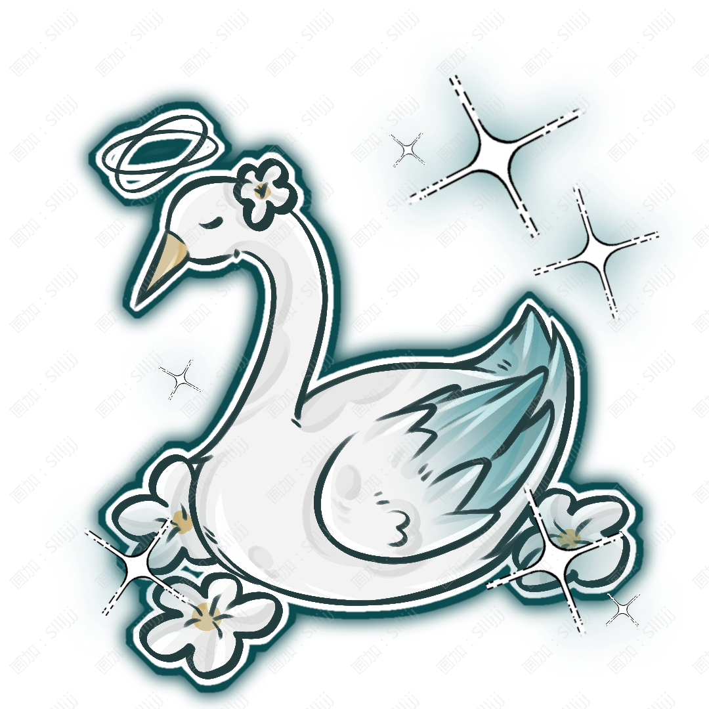

Qing Qiling
清棲翎

姓名：清棲翎。
英文：Qing Qiling。
種族：天鵝真裔。
性別：女。
生日：2月19日。
年齡：現年齡 192 歲；相當於人類29歲。
出身與現居：出生於晞曜國的一個天鵝真裔族羣；被驅逐後離開故鄉，後來跟隨雲硯前往瑟蘭迪斯。現居瑟蘭迪斯蒼穹庭。
身高：175cm。
體重：58kg。
白色長髮與天藍色眼睛，五官帶有明顯的東方古典感。
左眼瞳孔中呈現花朵般的紋樣，右眼則有月亮與星辰組成的特殊紋路。
發頂上有三根較長的白色羽飾狀真羽，身後擁有巨大的白色天鵝羽翼，頭頂則懸浮着一圈能夠發出柔和光芒的光環。
平時會隱藏翅膀，但三根羽毛與光環通常保留。
她幾乎一直佩戴眼罩遮住雙眼，即使沒有滿月也很少主動摘下。
清冷、寡言、沉穩而極善於觀察。
她不喜歡解釋自己，也很少主動參與沒有必要的爭論，因此第一次見到她的人通常會覺得她難以接近。
實際上她的耐心非常好，只是很少把溫柔表現得明顯。
她對寓幽與篁幾乎到了縱容的程度。
別人犯錯時，她會冷靜指出問題；
寓幽犯錯時，她先處理問題，再等寓幽自己意識到；
篁小時候闖禍時，她甚至偶爾會替他把明顯會嚇到大人的部分先收拾掉。
她並不是沒有情緒，只是太早學會了將情緒留給自己。
艾爾德利亞貴族，阿斯忒瑞亞家族唯一的小姐；
家族消失後隱藏身份成爲珠寶鑑定師。世界頂尖綜合學院畢業生；與寓幽同年級。
收藏漂亮卻少見的寶石、觀察月亮、研究珠寶切割方式、整理自己的收藏；
看到別人把珍貴寶石當成普通石頭時會忍不住糾正。
她曾經最大的願望是改變自己看見的未來。
後來她不再追求“不可能發生的改變”，而是希望至少讓那些必須經歷未來的人，在抵達結局以前不必獨自面對一切。
劍術、空中戰鬥、護衛、花屬性控制、觀察與追蹤、禮儀教育、歷史與真裔文化；
非常擅長在混亂環境中迅速判斷最需要保護的人。
力量：★★★★☆
體力：★★★★☆
智慧：★★★★★
魅力：★★★★☆
幸運：★★★★☆
武器：光環，劍，羽毛。
屬性：花。
技能：
「落英」
清棲翎揮動長劍，將花屬性附着在劍刃與周圍羽毛上。被釋放出去的羽毛會在飛行途中化作大量花瓣，從不同方向改變軌跡攻擊目標。花瓣本身並不堅硬，但每一片都攜帶着極細的屬性力量，因此能夠在接觸目標時瞬間集中。
「羽庭」
展開身後的羽翼，大量白色羽毛圍繞指定區域形成環形屏障。花屬性會在羽毛之間連接，使攻擊在接觸屏障時被逐層削弱。清棲翎最常將這個能力用於保護其他人，而不是保護自己。
「花渡」
清棲翎將頭頂光環暫時分解成數道發光圓環，並在不同位置留下花形標記。她可以借這些標記快速改變自己在空中的移動方向，也能夠讓自己的羽毛與花屬性攻擊在標記之間轉移。因此她的戰鬥方式看起來並不像單純飛行，更像不斷在空中改變軌跡。
大招「花庭」
清棲翎完全展開羽翼，光環升至高空並擴大。大量白色羽毛從天空緩慢落下，在接觸花屬性後化爲無數發光花瓣，將周圍區域覆蓋成一片巨大的“花庭”。花庭中的友方會被羽毛與花屬性形成的屏障保護，而被清棲翎判定爲威脅的目標則會受到不斷改變方向的羽刃與花瓣追擊。最後，空中的巨大光環收攏，所有散落的花屬性同時向中心匯聚。
特殊能力：每當滿月達到最明亮的時刻，清棲翎都有可能短暫看見未來。預見通常只有一句話或一個畫面，持續時間極短。她無法主動決定自己要看什麼，也無法通過能力知道事件發生的準確時間與完整原因。但只要真正出現預見，內容便一定會發生。最重要的是——她爲了阻止預言而做出的所有行動，本身也已經包含在那個未來之中。因此預見並不是“如果什麼都不做便會發生的未來”，而是已經包含她之後所有選擇與掙扎的最終結果。這也是她最終放棄主動向他人透露預言的原因。
血脈特徵：擁有大型白色天鵝羽翼，可以自由隱藏；擁有優秀的飛行能力。頭部三根特殊真羽無法完全隱藏。
雪團。
種類：白鼬靈獸。
屬性：雪。
雪團是一隻體型很小的白鼬靈獸，全身幾乎都是純白色，只有耳尖與尾巴末端帶着很淡的灰藍色，眼睛呈淺藍色。
它是在清棲翎進入蒼穹庭很多年以後自己出現的。
蒼穹庭位於較高處，冬季經常積雪。有一年清棲翎夜裏巡查時，發現雪團縮在建築外側的石階下躲風。
她只是把它抱進室內，給了它一點食物。
第二天原本準備放走。結果雪團直接鑽進了她的袖子裏。後來便沒有走。
雪團的性格非常活潑，而且尤其喜歡鑽進別人的袖子、披風與被子裏。
寓幽小時候非常喜歡它，經常趁清棲翎上課時偷偷用點心把雪團騙到自己那邊。
清棲翎每次都知道，只是從來沒有拆穿。
能力：
「雪跡」：雪團經過的位置會留下極淡的雪屬性痕跡。痕跡能夠保留一段時間，因此可以用於標記道路、尋找返回路線或確認某個地方是否有人經過。
「霜息」：釋放一陣範圍不大的寒冷氣息，使周圍溫度短暫下降並形成薄霜。攻擊能力並不強，但可以干擾目標行動，也能幫助熄滅小範圍普通火焰。